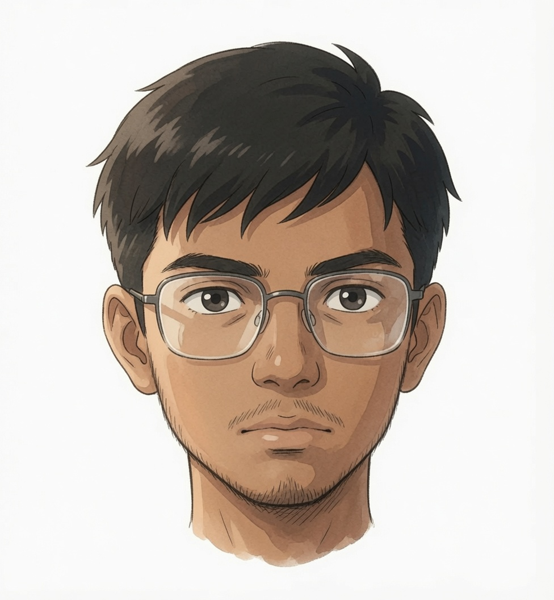

hamza
I like building things close to the metal—C, V, Go—whatever lets me understand what's really going on. No vibe coding here.
Polymorphism in C. Exploring dynamic dispatch, generic patterns, and OOP-like constructs without a runtime. Recreational programming at its core.
A collection of recreational programming experiments. AoC solvers, tokenizers, markov chains, encryption toys, higher-order functions, generics in C, a palindrome checker, and a custom project manager called mingle with autodoc. A strict no-vibe-coding zone — V language only (C also allowed).
A simple, lightweight library for building and experimenting with markov chains in V. Supports text model building, text generation, and model serialization.
A batteries-included TUI editor designed as a Vim/Neovim alternative. Built-in everything — no plugins needed. Vim motions, macros, syntax highlighting, and more. Helix-like philosophy but with actual Vim keybindings.
A lightweight baby Metasploit modular framework written in Go. Supports Python 3 and Bash modules with YAML-based metadata, interactive CLI, live output, and variable argument passing. Almost totally useless — and that's the point.
A terminal-based multi-pane IDE written in Go with tcell. Emacs-style UI without the stupid keybindings. Multi-buffer editor, Dired file browser, PTY terminal splits, fuzzy finder, LSP autocomplete, themes, Lua plugins, and AI chat. Basically a micro emacs that actually makes sense.
A small and lightweight portable DSML engine for local self-hosted LLMs. Agentic AI powered by Ollama with tool-calling (shell, web search, file I/O, weather, HN), web UI, streaming, TTS, and speech-to-text. Runs with models from 1.5b to 30b.
A self-hosted agentic development platform for local Ollama models. Agents can autonomously use web search, shell commands, file I/O, HTTP requests, and render markdown/HTML. Split-pane IDE UI with SSE streaming and live tok/s display.